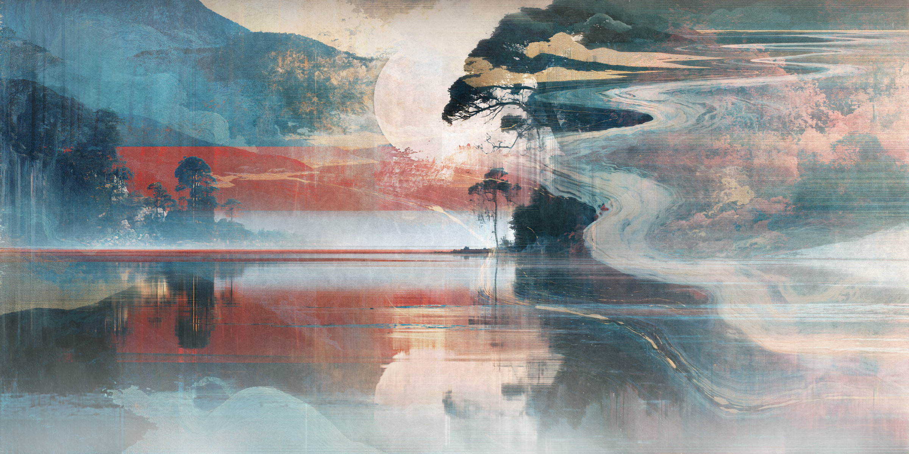
DRIVER’S SEAT No.0012026
- 技法Technique技法デジタルDigital数字（Midjourney v8.2, Boris FX Optics, Rebelle 8, Photoshop）
- 原寸Full size原尺寸162.15 × 81.08 cm, 300 dpi
- データData数据19152 × 9576 px
- 刷られた回数Printed被印次数0
原寸の 162.15 × 81.08 cm は、作家が制作中に見ている画面の実寸。ここでは、その原寸のデータを、全体から一画素まで見られる。離れて見れば月と松と、うねる河の景色が見え、近づくと景色はほどけて、流れの模様と和紙の肌、縦横に走る細い線が見えてくる。
The full size, 162.15 × 81.08 cm, is the actual size of the screen the artist looks at while working. Here the full-size data can be seen from the whole down to a single pixel. From a distance you see a landscape of moon, pines and a winding river; come closer and the landscape comes apart, and the patterns of the flow, the skin of the washi and fine lines running across and down come into view.
原尺寸 162.15 × 81.08 cm，是作者创作时所看屏幕的实际尺寸。在这里，可以把原尺寸的数据，从整体一直看到一个像素。远看，是月亮、松树与蜿蜒河流的景色；走近，景色便散开，流动的纹样、和纸的肌理与纵横交错的细线渐渐显现。
寄ると出てくる所Places that appear up close走近才出现的地方
選ぶと、上の画面がその場所へ原寸で寄る。Choose one, and the view above goes there at full size.选择后，上面的画面会以原尺寸走近那里。
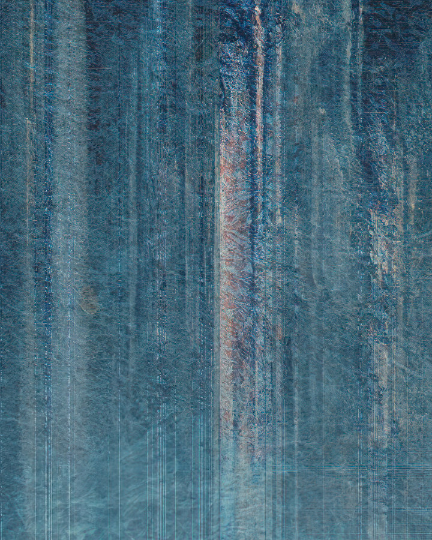
左の縦の線Vertical lines on the left左边的竖线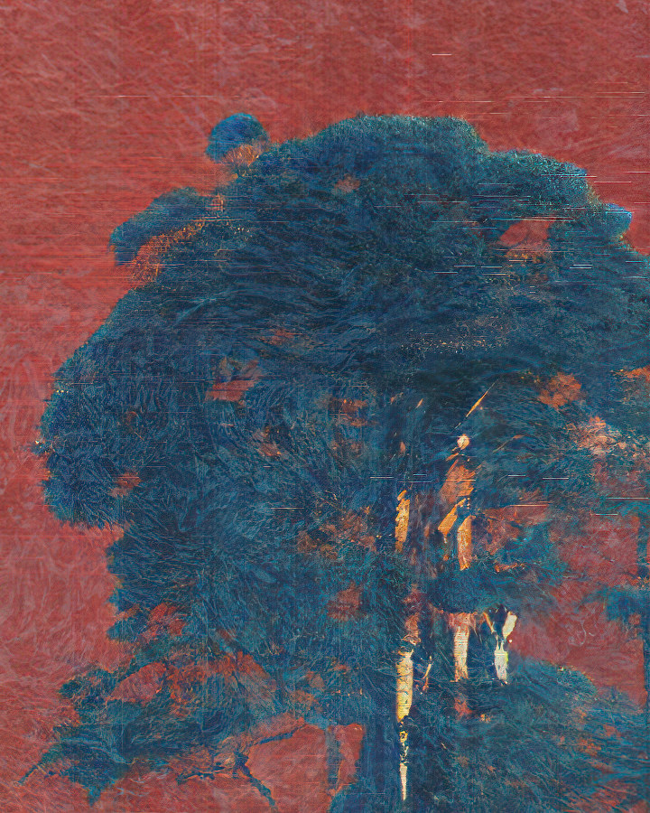
朱の中の松Pine in the vermilion朱红中的松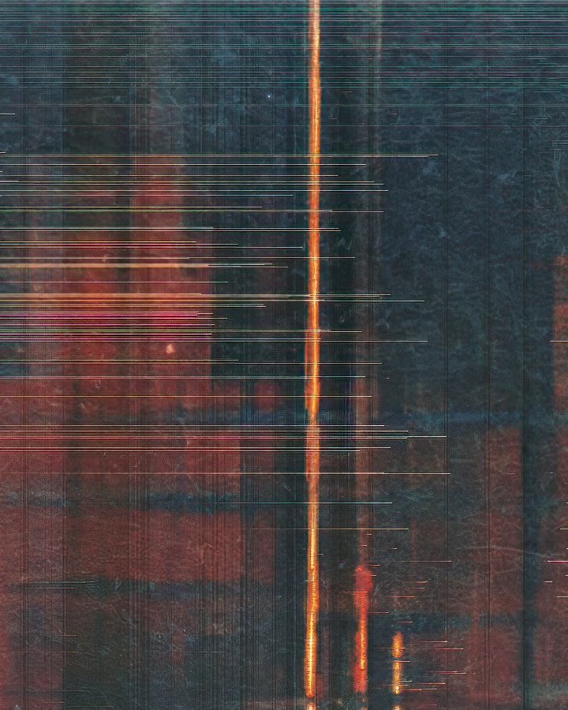
映りこみの縦の線A vertical line in the reflection倒影中的竖线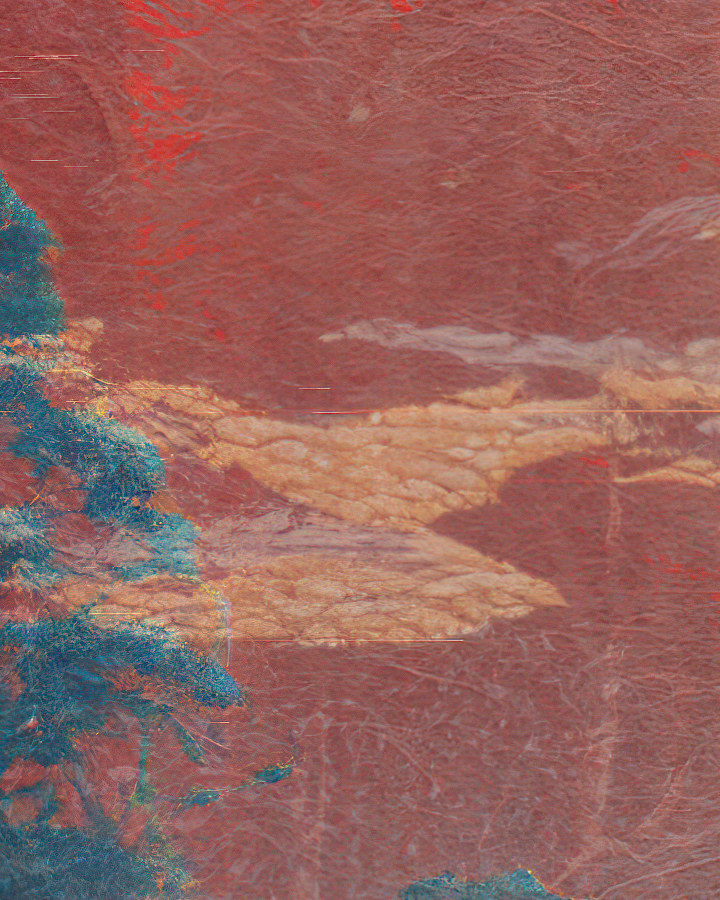
朱の中の雲Cloud in the vermilion朱红中的云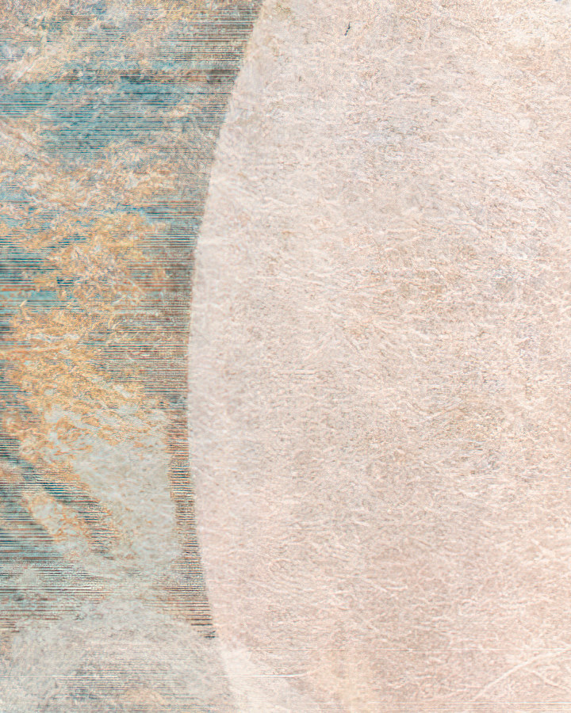
月の縁Edge of the moon月亮的边缘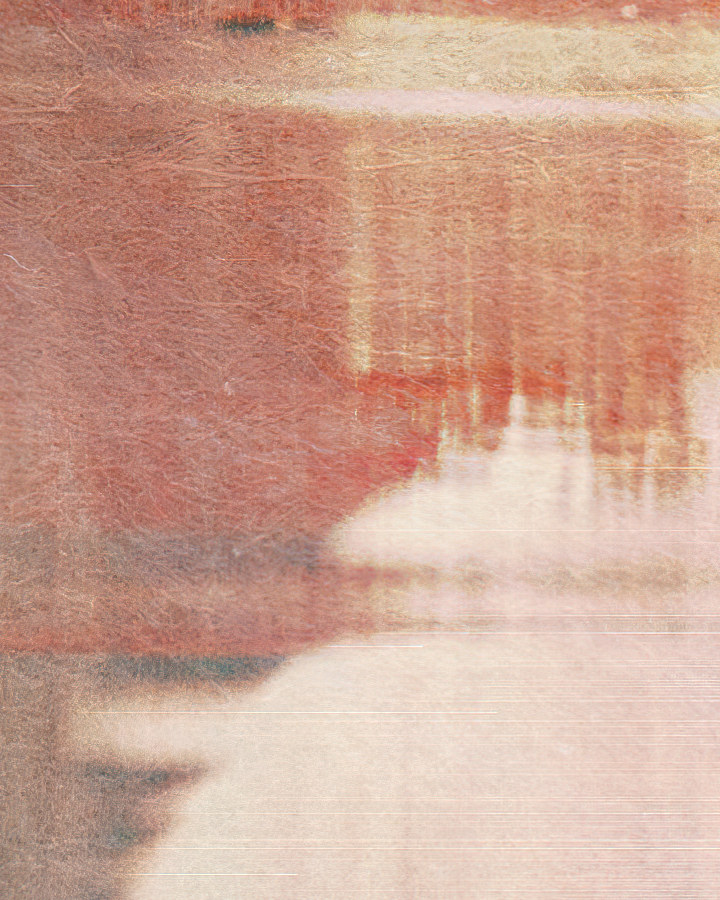
月の映りこみThe moon in the water水中的月亮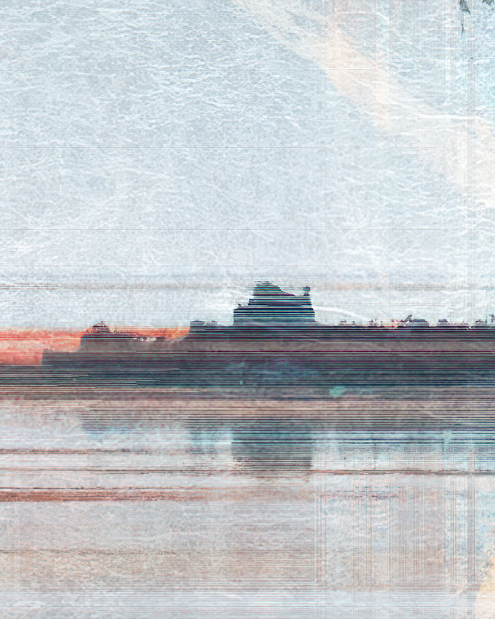
水平線Horizon水平线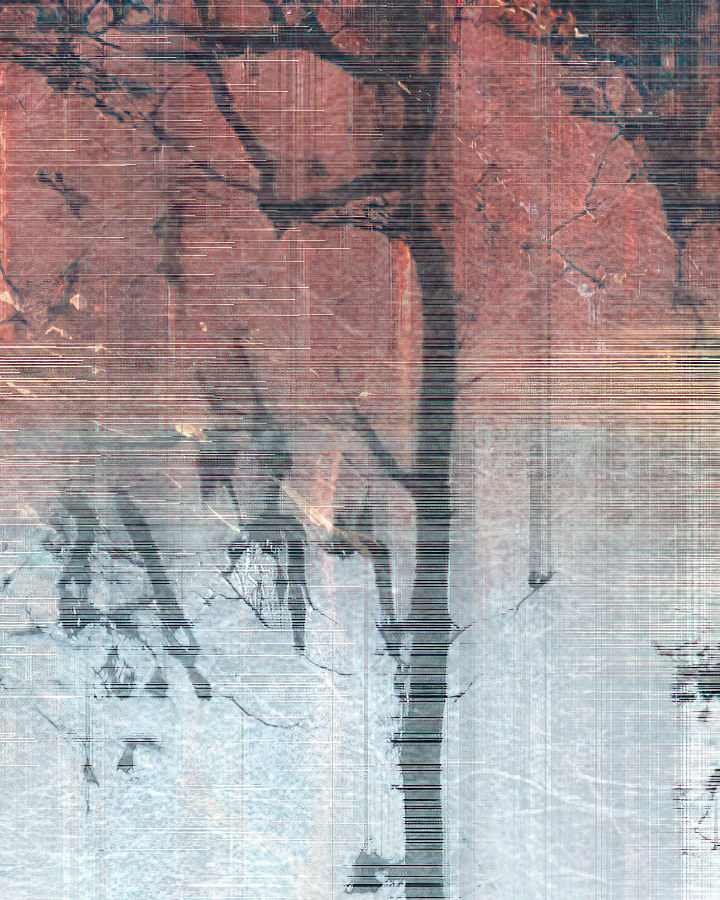
細い木Slender tree细长的树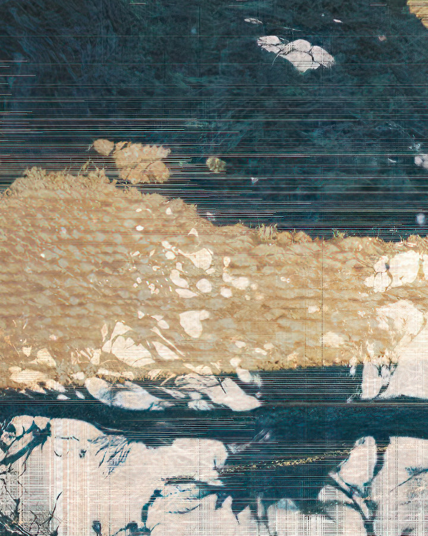
松の金Gold on the pine松上的金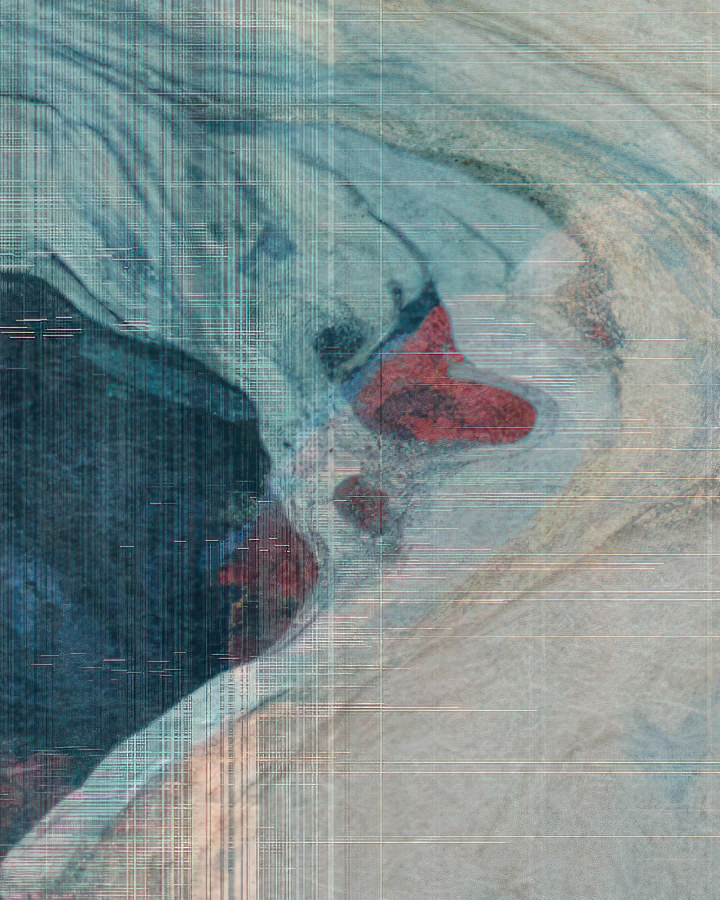
河の赤Red in the river河中的红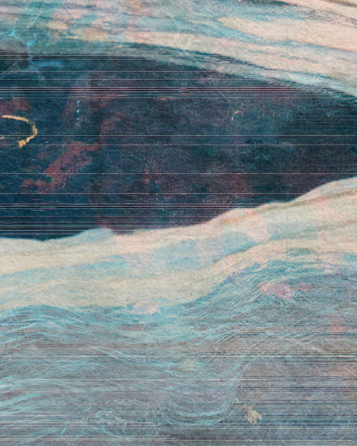
河のうねりThe river’s bend河的蜿蜒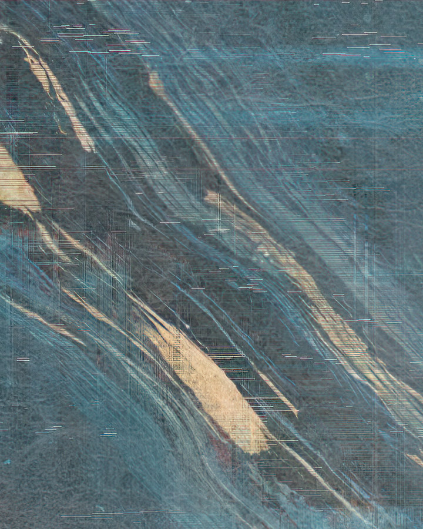
下流の金Gold downstream下游的金
欲しい人へIf you want one致想要的人
刷られた回数Printed被印次数0
この作品は、まだ一度も刷られていない。欲しい人がいれば、大きさを相談して和紙に刷り、額に入れる前に筆で署名を入れる。刷った日と番号は、このページに残す。
This work has never been printed. If someone wants one, the size is decided together, and it is printed on washi and signed with a brush before framing. The date and the number of each print are recorded on this page.
这件作品，还一次都没有被印过。若有人想要，就商量尺寸，印在和纸上，装框之前用画笔签名。印制的日期与编号，会记在这个页面上。